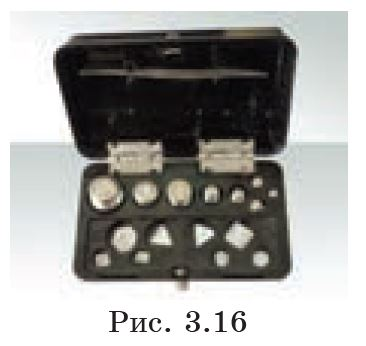
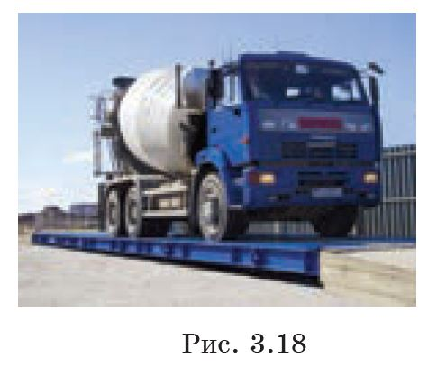
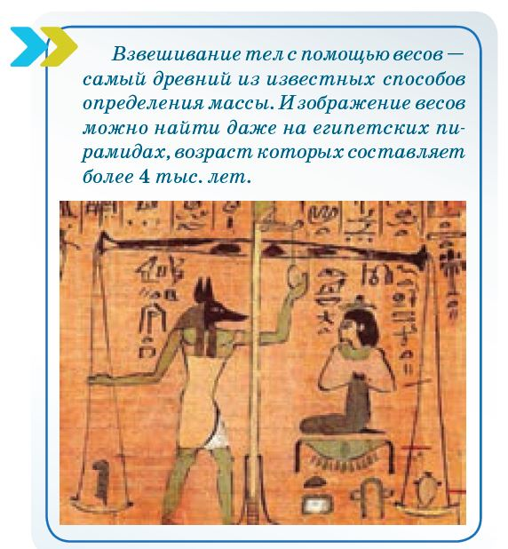

Рис. 3.11
Так, например, если мальчик и его отец, стоящие на льду на коньках, оттолкнутся друг от друга, то мальш отъедет на гораздо большее расстояние, чем его отец (рис. 3.11). Почему?
Наблюдая за характером движения тел, на которые действуют другие тела, можно заметить, что одни из них изменяют скорость незначительно, а другие за это же время — очень заметно.
Проведем опыт. Возьмем небольшую тележку с прикрепленной к ней упругой пружиной. Пружина сжата и связана нитью. Тележка поконится относительно стола. Интересно, начнет ли она двигаться после пережигания нити? Мы видим, что пружина разожмется, но тележка останется на месте (рис. 3.12, а, б).
Рис. 3.12а
Рис. 3.12б
Теперь поместим рядом с первой вторую, точно такую же, тележку, соприкасающуюся с другим концом пружины. Снова пережжем нить. Что же теперь будет происходить? После того как пружина разожмется, тележки разъедутся на одинаковые расстояния, но в противоположные стороны (рис. 3.13, а, б).
Рис. 3.13а
Рис. 3.13б
Можно заметить, что тележки разъехались только тогда, когда они стали действовать друг на друга посредством пружины. Пружина в этом случае играет роль посредника, т. е. с ее помощью одна тележка действует на другую.
Если же на правую тележку поместить гирю, масса которой в два раза больше массы тележки, то после пережигания нити они снова разъедутся в противоположные стороны, но теперь на разные расстояния (рис. 3.14, а, б). Нагруженная тележка приобретает меньшую скорость и за одно и то же время проедет меньшее расстояние. Это происходит потому, что тележки обладают разными массами.
Рис. 3.14а
Рис. 3.14б
Теперь нам легко объяснить, почему сын в первом опыте отъехал на большее расстояние, чем его отец.
Из этих опытов следует, что у каждого тела есть свойство "сопротивляться" попыткам изменить состояние его движения или покоя. Это свойство тел называется инертностью. Итак, более инертные тела имеют большую массу, легкие тела менее инертны, поэтому имеют меньшую массу. Теперь можем сделать вывод:
Масса есть мера инертности тела.
Масса, как и любая физическая величина, может быть измерена. Масса — скалярная величина, ее принято обозначать буквой m. Основной единицей измерения массы в системе СИ является килограмм. Как эталон массы, 1 кг был принят Международным соглашением. Этот эталон представляет собой цилиндр из сплава иридия и платины диаметром и высотой 39 мм, который хранится в Международном бюро мер и весов во Франции (рис. 3.15).
Рис. 3.15
Массу любого тела можно определить, сравнивая ее с этим эталоном.
Используя эталон массы 1 кг, изготавливают гири с различными массами, которые называются разновесами (рис. 3.16).
Рис. 3.16
Разновесы имеют различные массы, например, 1 г = 10⁻³ кг, 1 мг = 10⁻⁶ кг. Для взвешивания тел с большими массами используют грузы массами 1 г — 10⁴ кг.
Массу тела определяют по-разному. Одним из способов является взвешивание тела на весах. Весы бывают разные: пружинные, рычажные и электронные (рис. 3.17).
Рассмотрим процесс взвешивания тела на рычажных весах. На левую чашу весов помещают тело, массу которого необходимо определить, а на правую чашу — разновесы (набор гирь). Уравновешивание весов будет означать, что масса тела измерена и она будет равна суммарной массе гирь на правой чаше весов.
Рычажные
Пружинные
Электронные
Современные конструкции весов очень разнообразны. Школьные учебные весы позволяют взвешивать тела массами от 10 мг до 500 г. А вот вагоны и автомашины взвешивают на транспортных весах, рассчитанных на нагрузку до 200 т (рис. 3.18).
Рис. 3.18
Тела массами меньше 10 мг взвешивают на аналитических весах. Однако нет весов для измерения массы очень больших, гигантских тел и мельчайших частиц. При дальнейшем изучении физики вы узнаете, как именно были определены массы Солнца, Земли и таких мельчайших частиц, как электрон и протон.
Взвешивание тел с помощью весов — самый древний из известных способов определения массы. Изображение весов можно найти даже на египетских пирамидах, возраст которых составляет более 4 тыс. лет.
Понятие “массы” — одно из самых сложных понятий в физике. Оно многогранно и будет раскрываться по мере изучения предмета. Вы уже ознакомились с массой как мерой инертности тела. Далее вы узнаете, что существуют понятия гравитационной массы и массы как меры энергии.
Говорить об инертной массе имеет смысл только тогда, когда тела движутся со скоростями много меньшими скорости света, т. е. меньше, чем 300 000 км/с.
1. Что называется "взаимодействием тел"?
Взаимодействием тел называется действие тел друг на друга, при котором изменяются их скорости. В результате взаимодействия тела получают ускорения, направленные в противоположные стороны.
2. Что происходит с телами при взаимодействии?
При взаимодействии тела изменяют свои скорости. Если тела имеют одинаковую массу, они приобретают одинаковые по модулю, но противоположно направленные скорости. Если массы тел различны, тело с большей массой приобретает меньшую скорость, а тело с меньшей массой — большую скорость.
3. Какое свойство тел называется "инертностью"?
Инертность — это свойство тел "сопротивляться" попыткам изменить состояние их движения или покоя. Чем больше масса тела, тем труднее изменить его скорость, то есть тем больше его инертность.
4. Какая величина характеризует инертность тел?
Масса тела характеризует его инертность. Масса является мерой инертности: чем больше масса тела, тем больше его инертность, и тем труднее изменить его скорость под действием силы.
5. Почему нельзя мгновенно остановиться или мгновенно набрать большую скорость?
Потому что все тела обладают инертностью. Чтобы изменить скорость тела, требуется время, так как инертность тела препятствует мгновенному изменению его состояния движения. Чем больше масса тела, тем дольше требуется времени для изменения его скорости.
6. Почему масса является физической величиной? Назовите единицу измерения массы в системе СИ.
Масса является физической величиной, потому что она количественно характеризует свойство тел — инертность. Единицей измерения массы в системе СИ является килограмм (кг).
7. Как определить массу тела при помощи рычажных весов?
Чтобы определить массу тела с помощью рычажных весов, нужно поместить тело на одну чашу весов, а на другую — разновесы (гири) до тех пор, пока весы не придут в состояние равновесия. Масса тела будет равна сумме масс всех использованных разновесов.